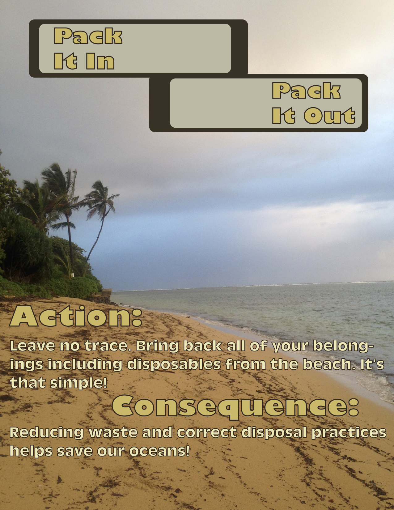

PDF version of poster accessible here.
Below is the poster I have created for Journalism Design Toolkit Fall 2020 with Professor Jason Das.
The poster features the common wilderness slogan, "pack it in, pack it out" in reference to the waste products people bring with them to specifically critical wildlife areas, in turn polluting both the proximate ecosystems as well as the Earth at large. While the content of the text on the image does not nearly hit all the points a poster published by the Coastal Reserve would need, it is a start at my own visual experimentation with these topics.
